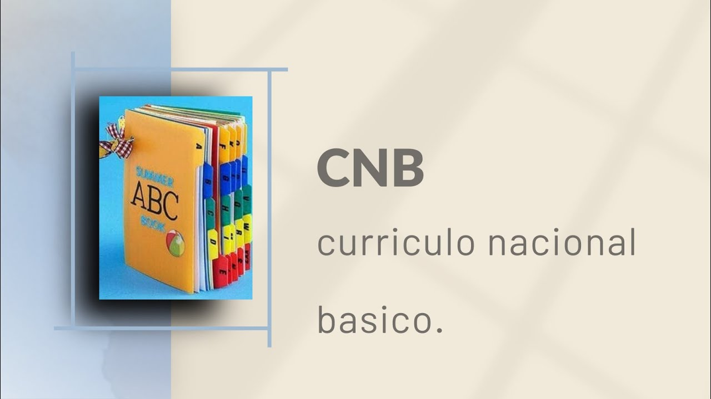
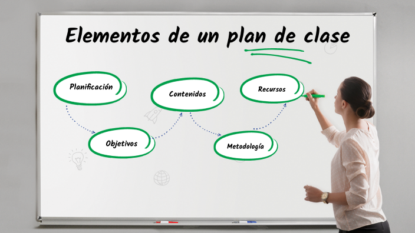

Portafolio académico digital
Portafolio de Estudiante.
Espacio académico orientado a la formación pedagógica, didáctica y humana en la Educación Básica.
Presentación general
Este portafolio reúne actividades académicas relacionadas con la formación docente en la carrera de Educación Básica, integrando reflexiones, análisis y temas desarrollados durante el periodo.
Propósito
Presentar el contenido de forma ordenada, clara y fácil de recorrer.
Universidad
Universidad Pedagógica Nacional Francisco Morazán
Numero de Cuenta
801200620558
Carrera
Educacion Basica
Organización del contenido
Introducción
Tema 1
Importancia de la ética docente como base del respeto, la responsabilidad y la formación humana dentro del aula.
Tema 2
Ley Fundamental de Educación y su función en la garantía del derecho a una educación inclusiva, gratuita y de calidad.
Tema 3
Casos prácticos sobre ética docente, análisis de faltas profesionales y reflexión sobre el compromiso educativo.
Tema 4
Cuestionario del CNB y el DCNEB, con énfasis en saberes, evaluación, competencias y organización curricular.
Tema 5
Plan de clase de Ciencias Sociales orientado a convivencia, armonía, participación y expresión personal en 2° grado.
Tema 6
Informe sobre el humanismo, sus características, aportes a la educación, ventajas y limitaciones.
Conclusión
Síntesis final de los aprendizajes alcanzados y reflexión sobre la formación docente como proceso integral.
Introduccion
El presente portafolio académico reúne una serie de trabajos elaborados durante el desarrollo de la asignatura, con el propósito de evidenciar aprendizajes, reflexiones y conocimientos fundamentales relacionados con la formación docente en Educación Básica.
A través de los distintos temas se abordan aspectos esenciales como la ética profesional del docente, la Ley Fundamental de Educación, el análisis de casos prácticos, la importancia del Currículo Nacional Básico y del Diseño Curricular para la Educación Básica, la planificación didáctica y el humanismo como enfoque centrado en la dignidad y el desarrollo integral de la persona.
Cada uno de estos contenidos permite comprender que la labor educativa no se limita a transmitir información, sino que implica formar seres humanos con valores, pensamiento crítico, sentido de convivencia y capacidad para transformar su realidad desde el aprendizaje.
Propósito formativo
Mostrar de forma organizada y reflexiva los principales aprendizajes construidos, integrando teoría, práctica educativa y visión humanista de la enseñanza.
Importancia de la ética docente
Artículo
La ética en la docencia es la base de una educación con respeto, ejemplo y compromiso.
La labor del docente influye directamente en la formación personal, emocional y social de sus estudiantes, por lo que enseñar también implica actuar con coherencia y responsabilidad.
Idea principal
Educar con ética significa actuar con coherencia, respeto y responsabilidad dentro y fuera del aula.
Integridad y ejemplo
El docente funciona como modelo para sus alumnos, y por eso sus acciones deben reflejar honestidad, coherencia y buen ejemplo.
Justicia y equidad
La ética favorece un trato digno e imparcial, asegurando igualdad de oportunidades y evitando prejuicios en el aprendizaje.
Protección del estudiante
Un entorno ético protege el bienestar emocional y físico del alumno, permitiéndole aprender con confianza y seguridad.
Un docente ético debe ser honesto, responsable, empático, respetuoso, prudente y comprometido con su vocación, manteniendo siempre coherencia entre lo que dice y lo que hace. Cuando la ética falta, pueden aparecer problemas como pérdida de respeto, dificultades administrativas, afectaciones emocionales en los estudiantes y deterioro de la imagen de la profesión docente.
Reflexión
La ética docente no solo mejora la enseñanza, sino que protege la dignidad del estudiante y fortalece el valor social de educar.
Valores esenciales
Honestidad, responsabilidad, empatía, respeto, justicia, prudencia y vocación forman parte del perfil de un docente ético.
Riesgos de no actuar con ética
La falta de ética perjudica el ambiente escolar y puede afectar profundamente la autoestima y confianza del estudiante.
Importancia profesional
El comportamiento del docente impacta no solo a sus alumnos, sino también el prestigio y la credibilidad de toda la labor educativa.
Ley Fundamental de Educación
Artículo
La educación es un derecho humano y una responsabilidad compartida entre Estado, familia y comunidad.
El educando es el centro del sistema, y la educación debe brindarse con equidad, calidad, inclusión y respeto a la dignidad humana.
Idea principal
La ley busca garantizar una educación accesible, gratuita, organizada e inclusiva para toda la población.
Derecho a la educación
Toda persona debe tener acceso a una educación orientada al desarrollo de su personalidad, capacidades y dignidad.
Responsabilidad del Estado
El Estado tiene el deber de organizar, dirigir y garantizar el sistema educativo como una función esencial de interés social.
Acceso y obligatoriedad
Se garantiza la gratuidad en los centros oficiales y la obligación de brindar cobertura desde la prebásica hasta la educación media.
La ley también establece que el sistema educativo debe organizarse por niveles y modalidades, responder a las necesidades del país y asegurar una educación integral y de calidad para toda la población.
Además, reconoce que los padres, madres, docentes, estudiantes y comunidad educativa tienen participación en el proceso formativo y en el fortalecimiento del sistema educativo.
Reflexión
La Ley Fundamental de Educación fortalece la idea de que aprender no es un privilegio, sino un derecho que debe ser garantizado con calidad, inclusión y responsabilidad social.
Gratuidad educativa
La educación en centros oficiales debe ser gratuita y no se deben exigir aportaciones económicas o materiales a las familias.
Universalidad
El Estado debe ofrecer oportunidades de acceso al sistema educativo a todas las personas, estén o no en edad escolar.
Participación educativa
La ley reconoce la participación de padres, docentes, estudiantes y comunidad en la mejora de la educación.
Casos prácticos y código de ética docente
Artículo de opinión
La ética docente también se demuestra en las decisiones diarias, en el trato al estudiante y en la responsabilidad dentro del aula.
El documento analiza tres casos que muestran cómo pequeñas acciones pueden dañar el aprendizaje, la confianza y la dignidad del alumno cuando falta el compromiso ético.
Idea central
Ser docente ético implica rechazar abusos, cuidar al estudiante y actuar siempre con responsabilidad, respeto y vocación.
Caso 1: Soborno académico
Aceptar regalos o dinero para cambiar notas destruye la justicia educativa y perjudica el verdadero aprendizaje del estudiante.
Caso 2: Burlas al estudiante
Hacer bromas sobre la apariencia física de un alumno constituye una falta grave de respeto y puede convertirse en acoso escolar.
Caso 3: Uso del celular
Cuando el docente se desconecta de la clase por el celular, deja de orientar, observar y acompañar el proceso de aprendizaje.
El análisis del documento plantea que estas conductas no deben verse como errores menores, sino como acciones que afectan la confianza, la autoestima del estudiante y la credibilidad del docente.
También propone soluciones concretas: poner límites claros ante intentos de soborno, documentar y sancionar actos de burla o acoso, y mantener una presencia activa durante el trabajo autónomo en clase.
Compromiso personal
El código ético propuesto se apoya en honestidad, responsabilidad, claridad de valores, disciplina, resiliencia y vocación de servicio hacia los estudiantes.
Solución ante el soborno
Mantener firmeza, rechazar cualquier pago o favor y recordar que enseñar también significa proteger la integridad del alumno.
Cero tolerancia al acoso
Las humillaciones públicas deben documentarse y atenderse con medidas formales para proteger los derechos del estudiante.
Docente presente
Acompañar, retroalimentar y observar el avance del grupo es parte esencial del trabajo docente, incluso en actividades individuales.
Honestidad
Actuar con verdad, transparencia y respeto por el esfuerzo del estudiante.
Responsabilidad
Cumplir con compromiso profesional en cada actividad, decisión y relación educativa.
Vocación
Educar con entrega, cuidando la curiosidad, el crecimiento y la confianza de cada alumno.
Cuestionario del CNB y el DCNEB
Cuestionario
El CNB orienta la formación de competencias, destrezas, actitudes y saberes que deben desarrollarse en el sistema educativo nacional.
El cuestionario explica que el currículo organiza la educación por áreas, niveles y ciclos, y que su propósito es dar orden, sentido y coherencia al proceso educativo.
Idea central
Conocer el CNB y el DCNEB permite comprender cómo se planifica la enseñanza y cómo se forma al estudiante de manera integral.
Fundamentos pedagógicos
El estudiante ocupa el centro del proceso educativo, y su aprendizaje se apoya en los pilares de saber conocer, saber hacer, saber ser y saber convivir.
Objetivos del CNB
Busca integrar el sistema educativo, fortalecer la gestión educativa y responder a la diversidad cultural del país.
Principios básicos
Entre los principios mencionados destacan identidad, trabajo y democracia participativa como ejes para formar ciudadanos críticos y responsables.
El cuestionario también señala que el CNB se operacionaliza mediante instrumentos como la matriz fundamental, los planes y programas de estudio, y otros componentes que detallan competencias, contenidos y expectativas de logro.
En relación con el DCNEB, se explica que el currículo se organiza alrededor de cuatro saberes y de contenidos conceptuales, procedimentales y actitudinales, lo que permite desarrollar una visión más completa del aprendizaje.
Importancia
Comprender estos documentos ayuda a que la enseñanza no sea improvisada, sino orientada por un marco nacional con metas, competencias y evaluación clara.
Funciones de la evaluación
La evaluación cumple funciones diagnóstica, formativa y sumativa, cada una con un propósito diferente dentro del proceso educativo.
Áreas curriculares
En los ciclos de educación básica aparecen áreas como comunicación, matemática, ciencias sociales, ciencias naturales, ética, tecnología y educación física.
Competencias del egresado
El estudiante debe comunicarse con efectividad, practicar valores y construir su proyecto de vida con autonomía y responsabilidad.
Saber conocer
Relaciona la adquisición de conceptos, comprensión y dominio de conocimientos fundamentales.
Saber hacer
Incluye procedimientos, estrategias y habilidades para aplicar lo aprendido en situaciones reales.
Saber ser y convivir
Promueve valores, actitudes, respeto a la diversidad y participación democrática dentro de la sociedad.

Plan de clase
Planeación didáctica
El plan de clase organiza actividades para fortalecer la convivencia, la memoria colectiva y la expresión personal en el aula.
La propuesta parte del bloque “La persona y su ser social” y busca que los estudiantes comprendan la importancia de convivir con los demás en un ambiente de armonía.
Idea central
La planificación guía el aprendizaje mediante actividades de exploración, participación, creatividad y reflexión adaptadas al contexto escolar.
Datos generales
El plan fue elaborado para el C.E.M.G Doctor Jorge Roberto Maradiaga, en el área de Ciencias Sociales, para 2° grado, con una duración de 40 minutos.
Aprendizaje esperado
Se busca que el estudiante comprenda el concepto de armonía, la importancia de convivir con otros y el valor de la socialización dentro de la escuela.
Contenido
El contenido trabajado es “Recuerdo e imagino”, orientado a relacionar experiencias pasadas, pertenencia escolar y proyección personal.
La actividad de inicio propone una narración grupal para motivar la memoria colectiva y la expresión oral, mientras que el desarrollo utiliza lluvia de ideas e interpretación de imágenes para conectar el aprendizaje con la convivencia y el trabajo en equipo.
En el cierre se integran una expresión artística sobre el uniforme escolar, identificación de talentos y una reflexión sobre el futuro, lo cual fortalece tanto la participación como el sentido de pertenencia del estudiante.
Evaluación
La evaluación es formativa y observa la capacidad de los estudiantes para expresar gustos, comprender el concepto de armonía y participar activamente en las narraciones grupales.
Recursos
Se utilizan libro de texto de Ciencias Sociales de 2° grado, cuaderno de trabajo, lápices, borrador, pizarra, marcadores, pegamento y recortes.
Estrategias didácticas
El plan combina narración, lluvia de ideas, análisis de imágenes, dibujo, reconocimiento de talentos y reflexión oral o escrita.
Tarea
Los niños deben llevar un objeto significativo de casa y explicar al grupo por qué ese objeto representa un recuerdo bonito e importante para ellos.
Inicio
Narración grupal y activación de recuerdos escolares para introducir el tema de forma cercana.
Desarrollo
Lluvia de ideas y análisis de imágenes para relacionar convivencia, estudio y trabajo en equipo.
Cierre
Dibujo, reconocimiento de talentos y reflexión sobre el futuro para reforzar identidad y participación.

Informe sobre el humanismo
Informe de investigación
El humanismo considera que la persona es valiosa por naturaleza y posee la capacidad de construir su propio desarrollo.
El documento explica que esta corriente surgió como una revalorización del ser humano y que, en la psicología, se consolidó como una alternativa enfocada en la salud, el bienestar y el potencial personal.
Idea central
El humanismo propone una visión del ser humano como libre, creativo, responsable y capaz de alcanzar su autorrealización.
Idea principal
El ser humano es bueno por naturaleza y tiene una tendencia innata hacia el crecimiento, la libertad y la construcción de su propio destino.
Autor destacado
Francesco Petrarca aparece como uno de los referentes del humanismo al rescatar el valor del espíritu humano mediante el estudio de las letras clásicas.
Visión educativa
En educación, el humanismo coloca al estudiante en el centro del aprendizaje y promueve empatía, autoestima y sentido personal de lo aprendido.
Entre las características principales del humanismo destacan el antropocentrismo, el libre albedrío, el holismo, la subjetividad y el fomento de la creatividad, elementos que permiten comprender a la persona de manera integral.
El informe también señala que el humanismo es conocido como la “tercera fuerza”, porque surgió como alternativa al conductismo y al psicoanálisis, planteando una visión más positiva del ser humano y de sus capacidades.
Influencia
Su impacto en la educación se observa en el aprendizaje significativo, la educación emocional y el protagonismo del estudiante dentro del aula.
Ventajas
Se centra en las fortalezas humanas, respeta la diversidad y fomenta la motivación intrínseca como impulso de mejora personal.
Desventajas
Puede considerarse demasiado subjetivo, difícil de medir científicamente y complicado de aplicar de forma totalmente personalizada en grupos grandes.
Aporte educativo
Ayuda a comprender la enseñanza como un proceso que no solo transmite contenidos, sino que también forma personas con autoestima, criterio y sensibilidad.
Antropocentrismo
El ser humano es entendido como centro y medida de la reflexión sobre la vida y la sociedad.
Libre albedrío
La persona tiene capacidad de elección y responsabilidad sobre sus actos y decisiones.
Creatividad y subjetividad
Se valora la expresión personal, la experiencia individual y la búsqueda de soluciones originales.

Conclusión
El desarrollo de este portafolio permitió comprender que la formación docente requiere una preparación integral en la que convergen conocimientos teóricos, valores éticos, organización curricular, planificación educativa y una visión humana del proceso de enseñanza-aprendizaje.
Los temas estudiados reflejan que educar implica mucho más que impartir contenidos, ya que también supone orientar con responsabilidad, promover la convivencia, respetar la diversidad, planificar con intención pedagógica y reconocer al estudiante como el centro del proceso formativo.
Asimismo, el análisis del humanismo, del currículo y de la práctica docente fortalece la idea de que el maestro debe actuar con sensibilidad, compromiso y claridad de propósito, contribuyendo no solo al aprendizaje académico, sino también al desarrollo personal y social de sus alumnos.
Reflexión final
Ser docente significa formar personas con conocimiento, valores, criterio y humanidad, asumiendo la educación como una tarea transformadora para la vida y para la sociedad.